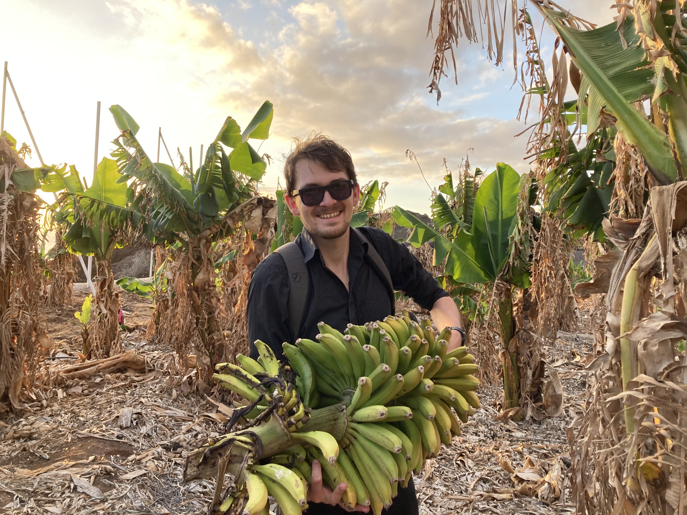

I lead a research group (supported by the Carl-Zeiss foundation) at the newly established Helmholtz Institute for Polymers in Energy Applications of the University of Jena and the Helmholtz Center in Berlin. I’m using computational tools and machine learning to capture the tacit and fuzzy dimensions of chemistry and materials science.
💼 Get in Touch
Email me, or DM me on  or
or  if you’d like to chat!
if you’d like to chat!
I appreciate any kind of feedback. If you want to leave some, you can do so anonymously here.
If you are looking for a short bio or a headshot, you can find them here.
📮 Feed
Below you can find some of my notes.
| Date | Title |
|---|---|
| 12/2/24 | Take it easy, my friend |
| 9/21/24 | The Tail End |
| 5/3/24 | Performing basic analysis of molecules generated by ML models |
| 5/2/24 | Building a GPT that can generate molecules from scratch |
| 5/2/24 | Building an LLM agent from scratch |
| 3/24/24 | The ‘researcher’s stuff’ |
| 3/2/24 | Language I want to be more mindful of |
| 3/2/24 | Multiple instances learning |
| 2/23/24 | Developing an intuition for backpropagation |
No matching items